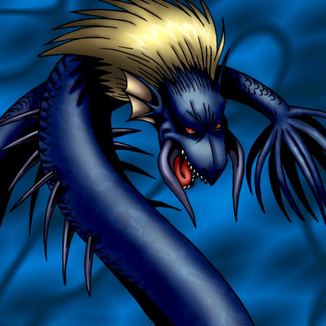

Spike Seadra

Description: "When this card is flipped face-up, this card is strengthened by 300 points for every THUNDER monster on the field."
STATS
ATK: 1600
DEF: 1300DECK COST
Deck Cost per Card: 34EFFECT NOT IMPLEMENTED
Fusion List (25 Possible Fusions)
- Spike Seadra + Akihiron = Aqua Dragon
- Spike Seadra + Ancient Jar = Stone D.
- Spike Seadra + Fairywitch = Kaminari Attack
- Spike Seadra + Axe Raider = Sword Arm of Dragon
- Spike Seadra + Bolt Penguin = Twin-Headed Thunder Dragon
- Spike Seadra + Celtic Guardian = Sword Arm of Dragon
- Spike Seadra + Clown Zombie = Skelgon
- Spike Seadra + Electric Lizard = Twin-Headed Thunder Dragon
- Spike Seadra + Electric Snake = Twin-Headed Thunder Dragon
- Spike Seadra + Flying Penguin = Kairyu-Shin
- Spike Seadra + Griggle = B. Dragon Jungle King
- Spike Seadra + High Tide Gyojin = Aqua Dragon
- Spike Seadra + Jellyfish = Kaminari Attack
- Spike Seadra + Kaminarikozou = Twin-Headed Thunder Dragon
- Spike Seadra + LaLa Li-oon = Twin-Headed Thunder Dragon
- Spike Seadra + LaMoon = Kaminari Attack
- Spike Seadra + Mechanical Spider = Metal Dragon
- Spike Seadra + Muka Muka = Stone D.
- Spike Seadra + Musician King = Kaminari Attack
- Spike Seadra + Octoberser = Kairyu-Shin
- Spike Seadra + Oscillo Hero #2 = Twin-Headed Thunder Dragon
- Spike Seadra + Roaring Ocean Snake = Aqua Dragon
- Spike Seadra + Swordsman from a Foreign Land = Sword Arm of Dragon
- Spike Seadra + The Melting Red Shadow = Kairyu-Shin
- Spike Seadra + Time Wizard = Thousand Dragon